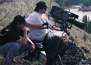
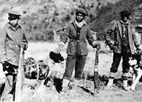
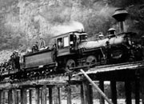
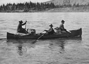
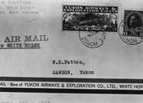
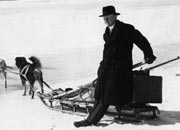
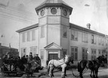
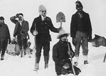

Initially the newcomers, like the First Nations people, used rivers and lakes for summer travel, and in winter, went overland either on foot or by dog sled. But soon Yukon transportation underwent a major change.
By the turn of the century steam-powered riverboats travelled the rivers that once saw only skin boats, rafts, poling boats and canoes. The construction of the White Pass railway established a year-round, mechanized link between the coast and the interior, with Whitehorse as the head of navigation. Communication also improved, with a telegraph line to the coast, and the advent of telephones.
By 1902 a winter road linked Dawson and Whitehorse. Horse-drawn stages delivered passengers, freight and mail. For nearly 20 years the stage line was a vital link, but by the late 1930s airplanes had replaced the stages. The construction of the Alaska Highway, along First Nations trails and early roads, created a corridor across the territory linking it to the rest of the continent. In the 1950s a highway was completed from Whitehorse to Dawson, ending the era of the sternwheelers.
New methods of transportation brought other changes too. Limitations created by the Yukon’s isolation and vast distances gradually diminished as transportation and communication improved. Modern inventions, such as faxes, e-mail and satellites, bring the rest of the world ever closer.
“...I calculate that I easily have covered miles enough on that trail these last twenty years to equal a journey to the moon.”
Overland Trail driver Simon Fiendel
Dawson Daily News, May 5, 1920
Continue to Where we livedTransportation and Communication
(Above) The people of Dawson turn out to meet the Sarah. The Sarah was one of the “lower river” boats that travelled the Yukon River below Dawson.
YA, Kingscote collection, 84/32 #27
Northern Native Broadcasting Yukon was formed to develop First Nations cultural and television programming. Crew members Rob Smith and Randy McKenzie on location.
Nedaa
Three Kaska men with pack dogs, Pelly River area, c.1923.
YA, Tidd collection #7532
A White Pass train crosses the Skagway River, July 21, 1898. The railway was constructed through the White Pass along the route of a First Nation trail to the interior.
YA, Beatty collection, 82/390 #140
A canoe at Yukon Crossing, where the Overland Trail crossed the Yukon River, n.d. Note the tower for the cable ferry in the background; ferries were used in the summer, canoes in the spring and fall.
YA, Back collection, 90/19 #165
An early air mail envelope, c.1928. Aviation companies sold their own separate stamps for the airmail surcharge. Note that regular postage was two cents and airmail was an extra 25 cents.
YA, Clyde Wann collection, 82/562 #29
Bishop Geddes with dog sled and driver, Stewart River area, 1930s.
YA, Tidd collection #7371
The Whitehorse-Dawson stage in front of the Dawson post office, n.d. Note the towering pile of cordwood in the background. The mail contract was a vital component of railway and riverboat freight.
YA, Scott/Phelps collection, 89/31 # 53
Stampeders and packers rest at the summit of the Chilkoot Pass, c.1897. Stampeders hired First Nations people for their expertise in packing and their knowledge of the route.
YA, Winter & Pond collection #2298